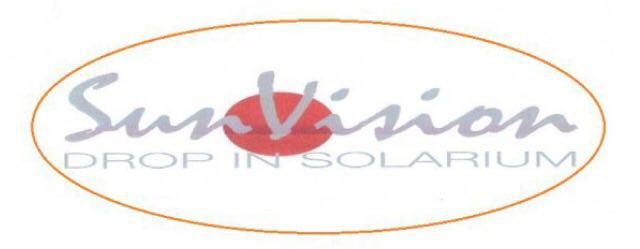

Vi erbjuder allt från trygg fastighetsskötsel och skinande rena städtjänster till en varm, avkopplande stund i våra moderna solarium-salonger.

Njut av skön värme och säker solning i våra fräscha salonger i både Sollefteå och Kramfors.
Pålitlig skötsel, underhåll och tillsyn av fastigheter för företag, BRF:er och privatpersoner.
Vi fixar städningen! Professionell hemstäd, flyttstäd och företagsstäd med skinande resultat.
Välkommen till våra trygga och fräscha solarium. Vi erbjuder drop-in i moderna solarier med regelbundna rörbyten för bästa resultat. Öppet alla dagar!
Storgatan 79
881 31 Sollefteå
Öppettider: 06:00 – 22:00 (Alla dagar)
Se bilder på Facebook 📸Torggatan 13
872 30 Kramfors
Öppettider: 06:00 – 22:00 (Alla dagar)
Se bilder på Facebook 📸Soltjänst i Ådalen AB är din trygga partner för allt inom fastighetsskötsel. Vi hanterar både inre och yttre skötsel, löpande underhåll, gräsklippning, snöröjning och mindre reparationer. Vi skräddarsyr lösningar utifrån era behov.
Lämna städningen till proffsen. Vi utför noggrann och effektiv städning för både privata hem och arbetsplatser i regionen. Oavsett om du behöver regelbunden veckostädning, storstädning eller flyttstädning levererar vi alltid högsta kvalitet.
Hör av dig till oss direkt via knapparna nedan för frågor eller offertförfrågningar!
Klicka på knapparna ovan för att starta ett mejl eller ringa oss direkt från din telefon eller dator.